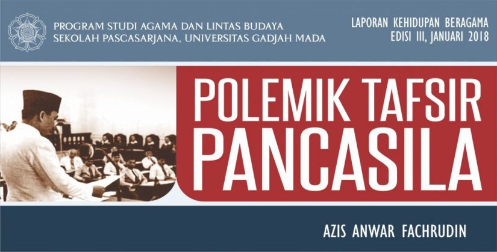

Ringkasan Mengenai Buku Polemik Tafsir Pancasila dari CSCR Report UGM
Dalam buku Polemik Tafsir Pancasila yang diterbitkan oleh CSCR UGM, membahas bagaimana Pancasila ditafsirkan dari periode ke periode. Untuk mengeksplorasi hal itu, lima isu dibahas dalam buku ini, yaitu:
1. Pancasila dan Islam
Di Orde Baru, isu yang paling panas dan lama diperdebatkan adalah isu dasar negara. Partai-partai politik terbagi menjadi tiga bagian yaitu: Pancasila, Islam, dan Sosio-Ekonomi. Pancasila dipahami dan ditafsirkan secara berbeda oleh masing-masing partai, namun secara umum dianggap tidak memiliki makna yang jelas atau cenderung ambigu. Kelompok partai Islam berusaha menunjukkan bahwa ideologi Islam lebih jelas daripada Pancasila.
2. Pancasila dan Organisasi/Partai Islam
Pancasila memiliki beragam tafsir sejak awal kemerdekaan Indonesia. Pada masa Orde Baru, Pancasila digunakan sebagai ideologi eksklusif dan menjadi dasar dari segala hukum melalui TAP MPRS No. XX/MPRS/1966. Pemerintah menggalakkan penerapan Pancasila secara luas melalui Pedoman Penghayatan dan Pengamalan Pancasila (P4), yang mendapat penolakan dari PPP dan tokoh-tokoh Islam karena dianggap menyerupai agama. Penolakan terhadap asas tunggal memicu ketegangan dan kekerasan, seperti peristiwa Tanjung Priok (1984) dan Talangsari (1989), menunjukkan bahwa tafsir Pancasila fleksibel dan bisa digunakan sebagai alat kekuasaan.
3. Pancasila dan Marxisme/Komunisme
Orde Baru melarang keras ideologi komunisme/Marxisme-Leninisme karena dianggap anti-agama. Berbeda dengan Orde Lama di bawah Sukarno yang justru mengusulkan persatuan antara Nasionalisme, Islamisme, dan Marxisme. Sukarno menggagas "Sosialisme ala Indonesia" dan konsep Nasakom (Nasionalis, Agama, Komunis) untuk melawan imperialisme.
4. Pancasila dan Demokrasi
Penerapan Pancasila dalam sistem ketatanegaraan berubah dari waktu ke waktu. Sila keempat sering digunakan sebagai dasar sistem pemerintahan. Era Sukarno (Demokrasi Terpimpin) dan Soeharto (Demokrasi Pancasila) menunjukkan otoritarianisme berbasis Pancasila, dengan kekuasaan terpusat. UUD 1945 sebelum amandemen cenderung mendukung sistem ini karena lemahnya checks and balances.
5. Pancasila Pasca-Reformasi
Pasca-Reformasi, Pancasila sempat jarang dibahas karena diasosiasikan dengan Orde Baru. Namun pada 2000-an, Pancasila kembali digaungkan untuk melawan radikalisme dan gerakan Islamis. Islamisasi dari bawah menimbulkan reaksi pro-Pancasila sebagai simbol kebinekaan. Kelompok Islamis juga mulai mengapropriasi Pancasila, khususnya dengan menekankan sila pertama sebagai tauhid.
Makna hidup: hidup adalah tentang pikiran yang mencari, menemukan, dan mempelajari apa yang tidak diketahui sebelum pikiran itu menghilang, dalam arti pikiran itu adalah manusia itu sendiri.